第十一章 曲线积分与曲面积分
在前面的章节中，我们的积分区域局限于坐标轴上的直线段、平面区域或空间立体内部. 然而，在经典电磁学（麦克斯韦方程组）、流体力学以及航天轨道力学中，大量的物理过程都是沿着弯曲的空间曲线路径进行（如沿航线做功、电荷线分布引力），或者穿过弯曲的空间曲面进行（如穿过曲面的磁通量、流体流过曲面的通量）. 这就要求我们将积分的几何积分域扩展为曲线和曲面，从而发展出曲线积分（Line Integral）与曲面积分（Surface Integral）. 本章将建立对弧长与对坐标的两类曲线积分、对面积与对坐标的两类曲面积分，深入阐述微积分学中三座顶峰级的积分转换定理——格林公式（Green's Theorem）、高斯公式（Gauss's Theorem）与斯托克斯公式（Stokes' Theorem），并由此奠定近代矢量场论（梯度、散度与旋度）的数学大厦.
第一节 对弧长的曲线积分（第一类曲线积分）
一、引例与概念定义
考虑一段非均匀曲线形构件 $L$，其线密度为 $\rho(x, y)$（图 11-1）. 将曲线细分为 $n$ 个小弧段 $\Delta s_i$，小段质量近似为 $\Delta M_i \approx \rho(\xi_i, \eta_i)\Delta s_i$. 和式的极限即为总质量：
设 $L$ 为平面上的一条光滑曲线弧，函数 $f(x, y)$ 在 $L$ 上有定义. 极限
$$\int_L f(x, y)ds = \lim_{\lambda \to 0}\sum_{i=1}^n f(\xi_i, \eta_i)\Delta s_i$$
称为函数 $f(x, y)$ 在曲线弧 $L$ 上对弧长的曲线积分（第一类曲线积分）.
重要性质：第一类曲线积分的积分值与曲线 $L$ 的走向方向无关：$\int_{L^-} f(x, y)ds = \int_{L^+} f(x, y)ds$.
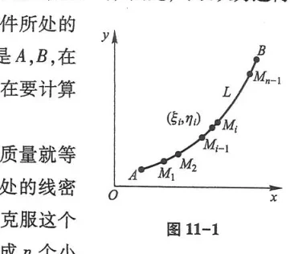
二、第一类曲线积分的计算法
化为定积分的核心是将弧微分 $ds$ 展开（图 11-2、图 11-3、图 11-4）：
- 参数方程 $\begin{cases} x = \varphi(t) \\ y = \psi(t) \end{cases}$ ($\alpha \le t \le \beta$)： $$\int_L f(x, y)ds = \int_\alpha^\beta f(\varphi(t), \psi(t))\sqrt{\varphi'^2(t) + \psi'^2(t)}dt \quad (\text{注意下限 } \alpha < \text{ 上限 } \beta)$$
- 直角坐标方程 $y = g(x)$ ($a \le x \le b$)： $$\int_L f(x, y)ds = \int_a^b f(x, g(x))\sqrt{1 + g'^2(x)}dx$$
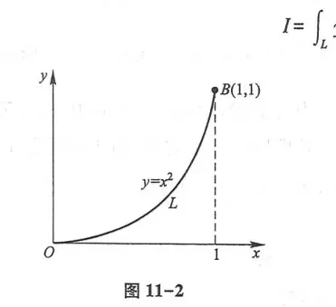
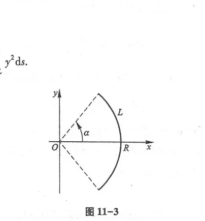
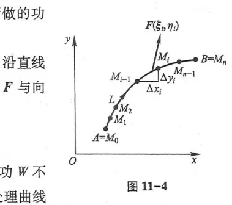
第二节 对坐标的曲线积分（第二类曲线积分）
一、引例：变力沿曲线所作的功
质点在变力 $\boldsymbol{F}(x, y) = P(x, y)\boldsymbol{i} + Q(x, y)\boldsymbol{j}$ 作用下，沿有向平面光滑曲线弧 $L$ 从起点 $A$ 移动到终点 $B$（图 11-5、图 11-6）. 在微元位移向量 $d\boldsymbol{r} = (dx, dy)$ 上，所做的功为点积微元 $dW = \boldsymbol{F} \cdot d\boldsymbol{r} = P dx + Q dy$.
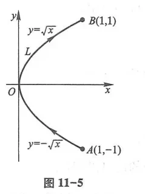
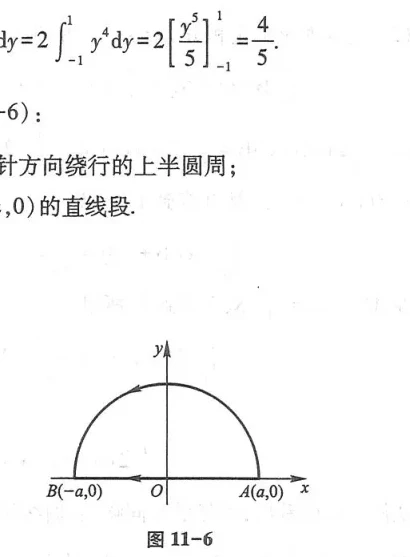
总功为和式的极限，称为向量场在有向曲线 $L$ 上对坐标的曲线积分（第二类曲线积分），记作：
$$\int_L P(x, y)dx + Q(x, y)dy = \int_L \boldsymbol{F} \cdot d\boldsymbol{r}$$
方向敏感性：如果改变积分路径的走向，积分值改变符号：$\int_{L^-} P dx + Q dy = -\int_{L^+} P dx + Q dy$.
两类曲线积分的联系：设 $L$ 上点处切向量方向余弦为 $(\cos\alpha, \cos\beta)$，则 $dx = \cos\alpha ds, dy = \cos\beta ds$（图 11-7），有： $$\int_L P dx + Q dy = \int_L (P\cos\alpha + Q\cos\beta)ds$$
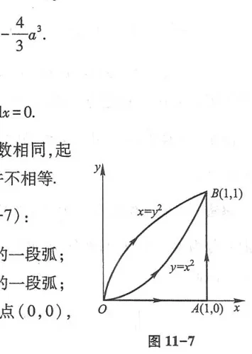
第三节 格林公式及其应用
一、格林公式
格林公式建立了平面闭区域上的二重积分与其闭边界曲线上的第二类曲线积分之间的直接等价联系（图 11-8、图 11-9、图 11-10、图 11-11）.
设闭区域 $D$ 由分段光滑曲线 $L$ 围成，函数 $P(x, y)$ 及 $Q(x, y)$ 在 $D$ 上具有一阶连续偏导数，则有：
$$\iint_D \left(\frac{\partial Q}{\partial x} - \frac{\partial P}{\partial y}\right)dxdy = \oint_L P dx + Q dy$$
其中 $L$ 为 $D$ 的全边界正向：人沿边界行走时，区域 $D$ 始终位于左侧（对单连通区域即为逆时针方向）.
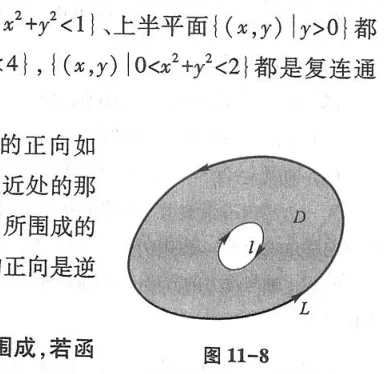
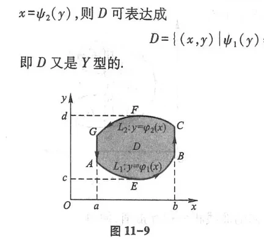
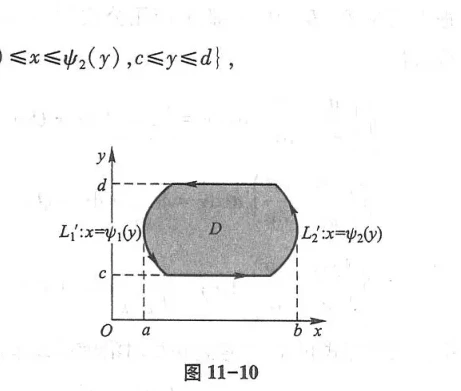
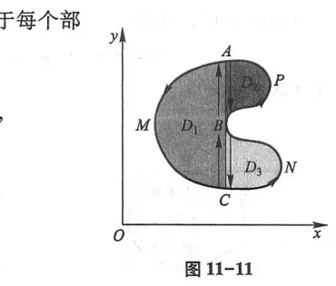
二、平面曲线积分与路径无关的条件
设 $G$ 为开单连通区域，$P(x, y), Q(x, y)$ 在 $G$ 内具有一阶连续偏导数，则以下四个条件完全等价：
- 沿 $G$ 内任意光滑闭曲线 $C$，恒有 $\oint_C P dx + Q dy = 0$；
- 对 $G$ 内任意起点 $A$ 与终点 $B$，曲线积分 $\int_L P dx + Q dy$ 与连接 $A, B$ 的路径无关（仅取决于起终点）；
- $P dx + Q dy$ 在 $G$ 内是某个二元函数 $u(x, y)$ 的全微分，即 $du = P dx + Q dy$（此时 $\boldsymbol{F}$ 为保守场/有势场，$\int_L = u(B) - u(A)$）；
- 在 $G$ 内处处成立： $$\frac{\partial Q}{\partial x} = \frac{\partial P}{\partial y}$$
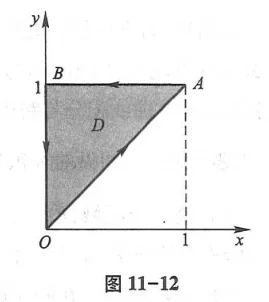
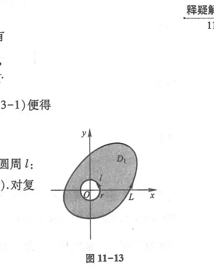
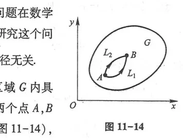
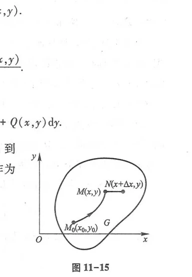
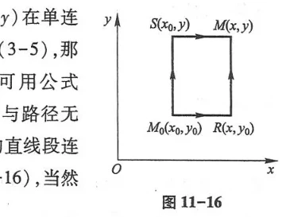
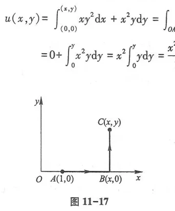
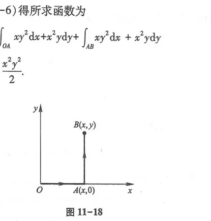
第四节与第五节 曲面积分
一、对面积的曲面积分（第一类曲面积分）
设 $\Sigma$ 为光滑曲面，$f(x, y, z)$ 为其上的密度分布（图 11-19、图 11-20、图 11-21）：
$$\iint_\Sigma f(x, y, z)dS = \lim_{\lambda \to 0}\sum_{i=1}^n f(\xi_i, \eta_i, \zeta_i)\Delta S_i$$
若曲面由 $z = z(x, y)$ 给出在 $D_{xy}$ 上，投影计算公式为：$\iint_\Sigma f dS = \iint_{D_{xy}} f(x, y, z(x, y))\sqrt{1 + z_x^2 + z_y^2}dxdy$.
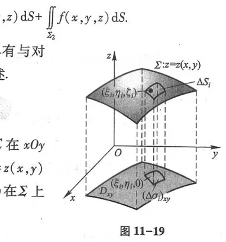
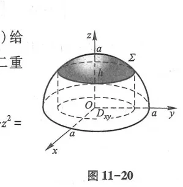
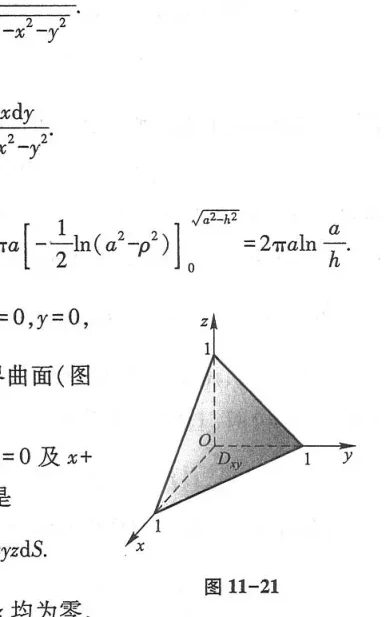
二、对坐标的曲面积分（第二类曲面积分）
设流速场为 $\boldsymbol{v}(x, y, z) = (P, Q, R)$，在有向曲面 $\Sigma$ 上的流量为（图 11-22 至图 11-26）：
$$\Phi = \iint_\Sigma P dydz + Q dzdx + R dxdy = \iint_\Sigma \boldsymbol{v} \cdot \boldsymbol{n} dS$$
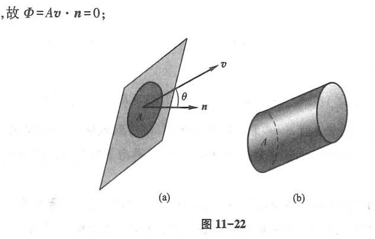
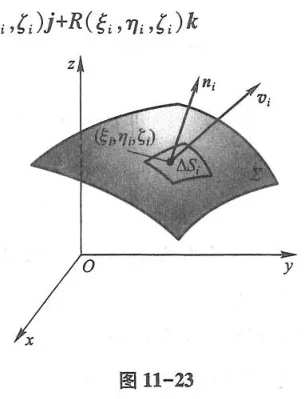
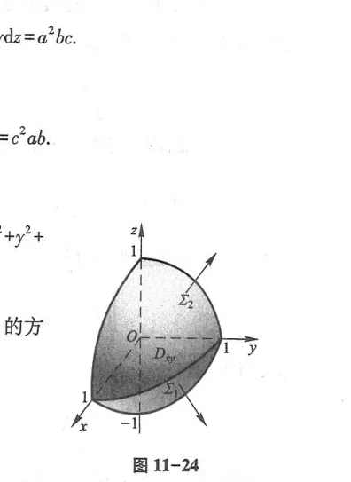
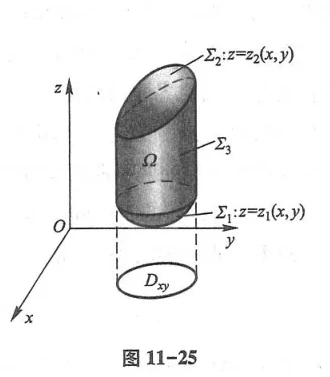
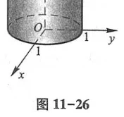
第六节 高斯公式 通量与散度
设空间闭立体 $\Omega$ 的全外边界为分片光滑闭曲面 $\Sigma$，函数 $P, Q, R$ 在 $\Omega$ 上具有一阶连续偏导数，则：
$$\iiint_\Omega \left(\frac{\partial P}{\partial x} + \frac{\partial Q}{\partial y} + \frac{\partial R}{\partial z}\right)dv = \iint_\Sigma P dydz + Q dzdx + R dxdy$$
其中闭曲面积分 $\iint_\Sigma$ 取 $\Omega$ 的外侧（图 11-27、图 11-28）.
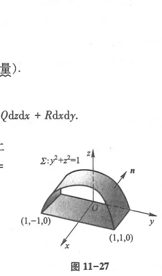
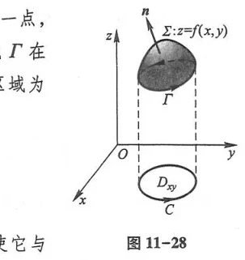
向量场 $\boldsymbol{A} = (P, Q, R)$ 的散度定义为单位体积向外的源强密度：
$$\operatorname{div}\boldsymbol{A} = \nabla \cdot \boldsymbol{A} = \frac{\partial P}{\partial x} + \frac{\partial Q}{\partial y} + \frac{\partial R}{\partial z}$$
高斯公式可写为：$\iiint_\Omega \operatorname{div}\boldsymbol{A} dv = \iint_\Sigma \boldsymbol{A} \cdot \boldsymbol{n} dS$（通量等于散度的体积分）.
第七节 斯托克斯公式 环流量与旋度
设光滑有向曲面 $\Sigma$ 的边界为分段光滑有向闭曲线 $\Gamma$，其走向与 $\Sigma$ 的法向量 $\boldsymbol{n}$ 符合右手螺旋法则（图 11-29、图 11-30、图 11-31），则：
$$\iint_\Sigma \operatorname{rot}\boldsymbol{A} \cdot \boldsymbol{n} dS = \oint_\Gamma P dx + Q dy + R dz$$
其中旋度（Curl）定义为： $$\operatorname{rot}\boldsymbol{A} = \nabla \times \boldsymbol{A} = \begin{vmatrix} \boldsymbol{i} & \boldsymbol{j} & \boldsymbol{k} \\ \frac{\partial}{\partial x} & \frac{\partial}{\partial y} & \frac{\partial}{\partial z} \\ P & Q & R \end{vmatrix}$$
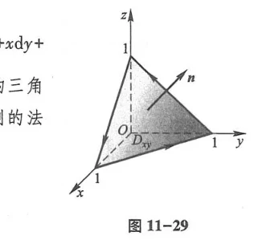
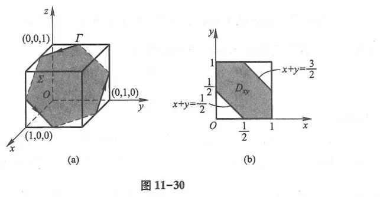
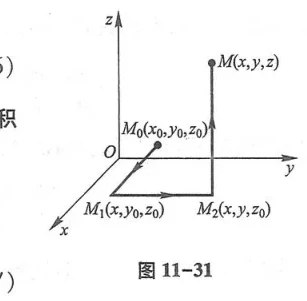
总习题十一
1. 利用格林公式计算 $I = \oint_L (e^x \sin y - 2y)dx + (e^x \cos y - 2)dy$，其中 $L$ 为上半圆周 $x^2 + y^2 = 2x$ ($y \ge 0$) 从原点 $(0, 0)$ 到点 $(2, 0)$ 的弧段.
解：补线段 $L_1$: 从 $(2, 0)$ 沿 $x$ 轴到 $(0, 0)$（$y = 0, dy = 0, x$ 从 $2$ 到 $0$）.
在封闭区域 $D$ 上：$P = e^x \sin y - 2y, Q = e^x \cos y - 2$.
$\frac{\partial Q}{\partial x} - \frac{\partial P}{\partial y} = e^x \cos y - (e^x \cos y - 2) = 2$.
闭曲线正向积分为：$\oint_{L + L_1} = \iint_D 2 dxdy = 2 \cdot \text{Area}(D) = 2 \cdot \frac{1}{2}\pi (1)^2 = \pi$.
在线段 $L_1$ 上：$\int_{L_1} P dx + Q dy = \int_2^0 0 dx = 0$.
故所求积分 $I = \oint_{L + L_1} - \int_{L_1} = \pi - 0 = \pi$.
2. 计算 $\iint_\Sigma x^3 dydz + y^3 dzdx + z^3 dxdy$，其中 $\Sigma$ 为球面 $x^2 + y^2 + z^2 = a^2$ 的外侧.
解：应用高斯公式：
$\frac{\partial P}{\partial x} + \frac{\partial Q}{\partial y} + \frac{\partial R}{\partial z} = 3x^2 + 3y^2 + 3z^2$.
原式 $= \iiint_\Omega 3(x^2 + y^2 + z^2)dv$. 变换为球面坐标：
$= 3 \int_0^{2\pi} d\theta \int_0^\pi \sin\varphi d\varphi \int_0^a r^2 \cdot r^2 dr = 3 \cdot 2\pi \cdot 2 \cdot \frac{a^5}{5} = \frac{12}{5}\pi a^5$.